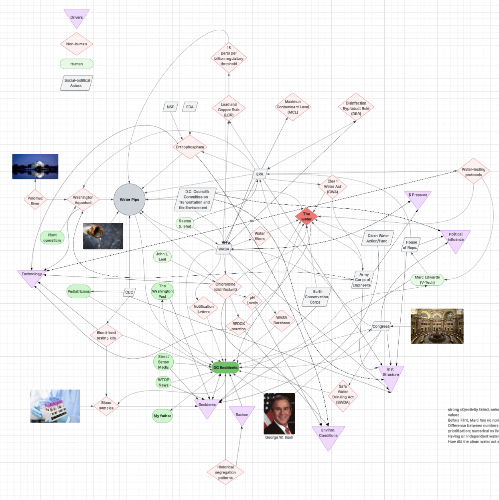
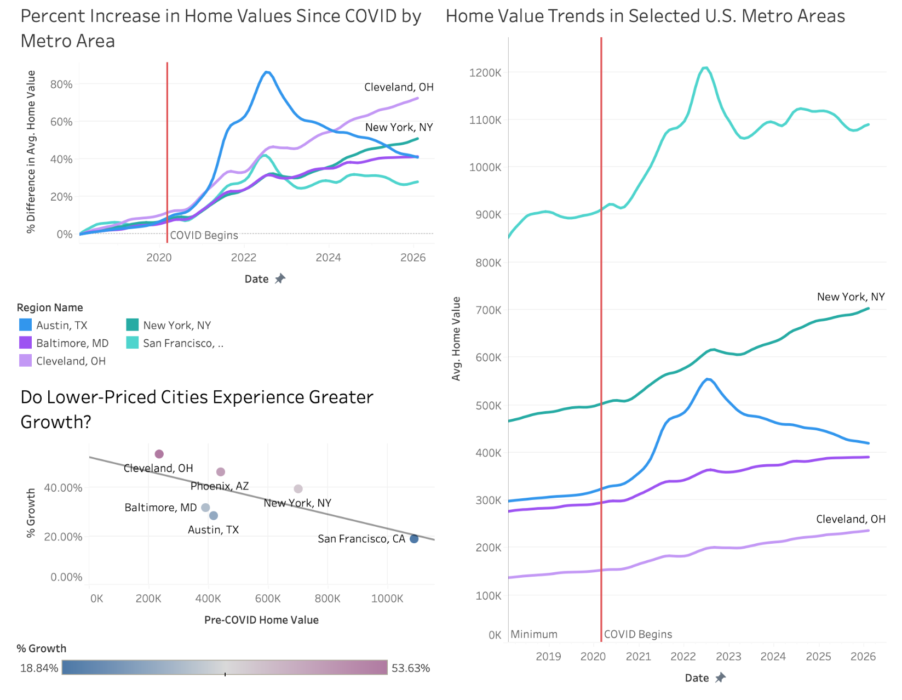
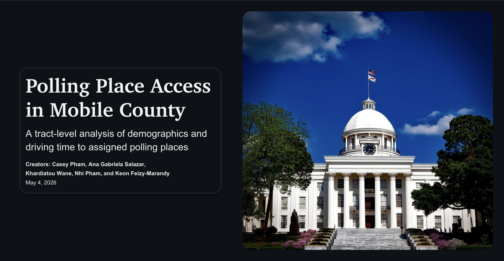

Do not overstate the null
Failing to reject the null does not prove that inequity does not exist.
Data Analysis · Systems Research · Technology
The problems that interest me most are rarely confined to one field. They often sit at the intersection of technology, policy, operations, and the people those systems are meant to serve. As an analyst, I use research and data to make sense of those connections, identify overlooked perspectives, and translate complex findings into practical recommendations.
About
My projects often begin with a broad question and become more focused as I examine the evidence, identify patterns, and better understand the people affected by the issue.
I have applied this approach to environmental health, compensation benchmarking, manufacturing processes, public infrastructure, housing affordability, voting access, and accessible software development.
Across each experience, my goal is the same: understand how a system works, communicate what the evidence can responsibly support, and turn complex information into something useful.
Selected Work
Each project shows a different part of my process: defining the question, gathering evidence, analyzing a system, and communicating a responsible recommendation or conclusion.
Public Health · Exploratory Data Analysis
Examined more than 10,000 public-health records to explore relationships between lead service-line risk and chronic health outcomes.
View case study → 02Nonprofit Consulting · Benchmarking
Compared compensation across more than 20 nonprofits and developed practical recommendations for pay and progression.
View case study → 03Operations · Process Improvement
Learned manufacturing processes directly from operators before standardizing more than 30 procedures.
View case study → 04Policy Research · Systems Thinking
Investigated how infrastructure, regulation, institutional power, and resident knowledge shaped a public-health failure.
View case study → 05Tableau · Data Storytelling
Explored how home-value growth and affordability changed differently across U.S. metropolitan areas.
View case study → 06ArcGIS · Voting Access
Tested whether modeled driving time to assigned polling places was a mechanism of racialized voting inequity.
View case study → 07Accessible Technology · Team Development
Built an accessibility-focused routine tracker for UMD students who may struggle with completing daily tasks.
View case study →Case Study 01
A self-directed public-health analysis completed through Extern in partnership with TrueBridge.
Overview
During an Extern engagement completed in partnership with TrueBridge, I was given the freedom to choose the direction of my analysis. I returned to a subject that had already shaped years of my academic work: the relationship between aging water infrastructure and community health.
Using government datasets, I examined lead service-line risk alongside indicators such as hypertension and kidney disease. The purpose was not to prove a predetermined theory. I wanted to determine whether the data revealed patterns strong enough to justify deeper questions.
Approach
Selected an environmental-health question grounded in public infrastructure.
Cleaned, organized, and connected large government datasets in Python.
Compared infrastructure-risk measures with neighborhood health indicators.
Separated statistical relationships from claims the data could not prove.
Findings
Approximately 16% of the service lines represented in the data were classified as risky. The analysis also revealed a relationship between hypertension and kidney disease. Viewed together, these findings placed infrastructure and health within the same neighborhood context.
The results did not establish that lead service lines caused either health outcome. They did, however, show why infrastructure data should not be separated from questions of public health and environmental equity.
Reflection
Data did not give me a final answer. It showed me where better questions needed to be asked. The project strengthened my ability to work independently with large public datasets while reinforcing the importance of distinguishing correlation from causation.
Case Study 02
A solo nonprofit consulting engagement completed through Extern in partnership with PwC and South Asian Youth Action.
Challenge
South Asian Youth Action is a mid-sized nonprofit serving communities across all five New York City boroughs. Through a partnership with PwC, I was asked to independently benchmark its compensation against comparable organizations.
The assignment required more than finding salary numbers. Job titles often differ across nonprofits even when the underlying work is similar, so I had to understand the responsibilities behind each role before deciding which comparisons were genuinely useful.
Approach
Compared duties and organizational expectations, not titles alone.
Collected compensation information from more than 20 nonprofits.
Examined salary ranges and roles at greatest risk of falling behind.
Translated the analysis into an actionable business case.
Recommendation
The analysis showed that the greatest pressure existed toward the lower end of the salary structure. Program Coordinators and Instructors stood out as roles where an adjustment could improve competitiveness and retention.
I recommended increasing compensation for those roles by approximately 10–12% and pairing the adjustment with a more structured progression model. The goal was not simply to raise salaries, but to make the relationship between responsibility, performance, tenure, and advancement clearer.
Reflection
Research becomes valuable when the recommendation is ambitious enough to matter and practical enough to implement. This project strengthened my ability to compare complex market information and present recommendations to senior stakeholders.
Case Study 03
A manufacturing internship focused on process observation, employee knowledge, root-cause analysis, and documentation.
Challenge
During my internship at Phoenix Color, I worked under a senior process engineer to learn how a large manufacturing facility moved materials, information, and responsibility across departments.
I spent full days on the manufacturing floor during my first week, observing machines, speaking with operators, taking notes, and sketching the order of processes. That foundation mattered because written procedures did not always capture the knowledge employees used in practice.
Approach
Studied workflows before making assumptions about the process.
Interviewed employees who understood day-to-day variation firsthand.
Used the 5 Whys framework to investigate quality and workflow gaps.
Created a consistent SOP template and updated documentation.
Contribution
I audited and standardized more than 30 SOPs across billing, safety, accounts, printing, and other functions. Existing uncontrolled documents were converted into clearer controlled procedures using a consistent template that the plant could continue using after my internship.
I also built a Miro visualization that traced paper flow through the manufacturing stages and presented the findings to the plant manager.
Reflection
Process improvement does not begin with changing people’s work. It begins with understanding it. The operators were not simply sources of information; they were experts whose knowledge had to be represented accurately in the final documentation.
Case Study 04
A multi-year research project examining infrastructure, institutional power, regulatory data, and resident knowledge.

Investigation
My research into the 2004 D.C. lead water crisis began as a question about infrastructure and gradually became a study of power. I examined the roles of residents, DC Water and Sewer Authority, the EPA, the Army Corps of Engineers, scientists, public-health institutions, regulations, testing methods, and the physical water network itself.
The project showed that the crisis was not caused by a single broken pipe or one poor decision. Responsibility was distributed across agencies, technical systems, and political structures, which made accountability difficult to trace.
Evidence
Examined how institutions framed compliance and safety.
Compared official claims with visible contamination and public concern.
Centered the knowledge of people interacting with the system daily.
Mapped relationships among human, technical, and regulatory actors.
Key Insight
Official testing methods gave institutions significant control over what was recognized as data. Residents observed discolored water, unusual smells, and health concerns before those experiences were fully acknowledged through formal channels. When institutional findings contradicted lived experience, the official system remained more powerful.
That imbalance created a delay between harm and institutional recognition. It also weakened public trust by excluding the people most directly affected from the process of defining whether a problem existed.
Recommendation
I recommended revising monitoring practices so repeated resident complaints automatically trigger follow-up testing, expanded neighborhood sampling, and public notification. Testing results, complaint histories, and investigation timelines should also be easier for communities to access.
The larger lesson was that technical systems become more responsive when they treat lived experience as a complementary source of knowledge rather than a competing one.
Reflection
I used to assume that data simply reflected reality. This project taught me that data is constructed through decisions about what to measure, whose reports to trust, and which thresholds define a problem.
Case Study 05
A Tableau data-storytelling project examining how home values and affordability changed across U.S. metropolitan areas after the beginning of the COVID-19 pandemic.

Question
I began this project with a broad interest in how COVID-era migration and remote work affected housing markets. As I explored the data, I narrowed the analysis toward the differences between metropolitan areas and the affordability challenges those changes created.
Rather than treating the United States as a single housing market, I compared how home values changed across cities with different starting prices, growth rates, and regional conditions.
Approach
Organized Zillow Home Value Index data for comparison across years and metropolitan areas.
Measured percentage growth from 2018 onward to make markets with different price levels more comparable.
Examined how lower-priced and higher-priced cities experienced post-COVID growth differently.
Designed a Tableau narrative that moved from national trends to specific relocation decisions.
Analysis
Home values rose sharply after 2020, but the rate of growth differed considerably across metropolitan areas. Some markets that began with lower home values experienced rapid percentage increases, while already expensive cities remained difficult to access even when their growth was slower.
This made affordability more complicated than simply identifying the city with the lowest average home value. A relatively inexpensive market could still become less attainable if prices grew much faster than local incomes or entry-level salaries.
Iteration
My original plan focused primarily on whether housing values had increased since the pandemic. That question was too broad to produce a useful story because the overall direction of the national market was already visible.
I revised the project to focus on regional variation and the choices facing students or recent graduates who may be moving for work. This shift made the visualization more specific, practical, and connected to a real audience.
Reflection
I did not begin with a fixed conclusion and build a dashboard around it. The questions evolved because the data complicated my assumptions. Tableau provided the medium, but the central challenge was guiding a nontechnical audience through why the patterns mattered.
Case Study 06
A team-based ArcGIS consulting project testing whether assigned polling-place drive time created a spatial burden for Black and Latine communities in Mobile County, Alabama.

Question
As part of a semester-long consulting project at the University of Maryland, my team partnered with the Southern Poverty Law Center to investigate whether travel time to assigned polling places contributed to voting inequities in Mobile County.
Rather than assuming what the data would show, we focused on a narrower question: was driving time itself a mechanism contributing to unequal voting access for Black and Latine communities in 2020?
Approach
Combined Census demographics, precinct boundaries, polling places, and road-network information.
Used population-weighted tract centroids and network analysis to estimate realistic drive times.
Examined relationships between modeled travel time and neighborhood racial composition.
Distinguished what the evidence supported from what it could not claim.
Method
We combined Census demographics, tract population centroids, precinct boundaries, polling-place locations, and road-network data in ArcGIS. Population-weighted tract centroids served as proxies for communities and were joined to corresponding demographic information.
We did not calculate straight-line distance. ArcGIS Network Analyst estimated modeled driving time using road layout, connectivity, turn restrictions, and other travel constraints. Lines shown between centroids and polling places were used only for visual context.
Finding
Census tracts with higher Black and Latine population shares were not associated with longer modeled driving times. The relationship appeared to move in the opposite direction, largely because those communities were concentrated in more urban and densely populated areas where precincts and travel distances were generally smaller.
This result did not mean voting access was equitable in Mobile County. It meant only that higher Black and Latine tract shares were not associated with longer modeled drive times within this specific 2020 dataset.
Responsible Interpretation
Failing to reject the null does not prove that inequity does not exist.
Drive time is only one possible barrier among many forms of electoral disadvantage.
The finding applies only to Mobile County and the 2020 data used in the model.
A single tract centroid may not represent every community equally well.
Value for SPLC
The final model gave SPLC a tract-level method for evaluating whether assigned polling-place drive time creates a spatial burden in a given region. The approach can be repeated in other locations and extended with Census measures such as vehicle ownership, income, educational attainment, housing tenure, or other indicators.
Just as importantly, the analysis helped distinguish drive time from other potential voting-access barriers, allowing future research to focus on mechanisms the data may support more strongly.
Reflection
This project strengthened my technical GIS skills, but its most important lesson was interpretive. Good analysis is not only about finding a result. It is also about defining the limits of that result and preventing the evidence from being stretched into a claim it cannot support.
Case Study 07
A collaborative software development project focused on building an accessibility-centered routine tracker for University of Maryland students.
Challenge
My teammates and I wanted to create a project that addressed a real need within our own university community. We focused on students with learning disabilities who may struggle with maintaining routines, remembering daily responsibilities, or organizing multiple tasks.
Rather than building a generic planner, we centered the project around accessibility from the beginning. Every design decision considered how users would actually interact with the application during everyday life.
Development
Identified common challenges experienced by students managing routines and executive functioning.
Worked with teammates to refine layouts, features, and user interactions through continuous feedback.
Developed the website using Flask, Python, HTML, and CSS.
Prioritized clarity, accessibility, and simplicity throughout the development process.
My Contributions
I participated throughout planning, interface design, feature discussions, implementation, and testing. Working closely with three teammates strengthened my ability to communicate technical ideas, divide responsibilities, and iteratively improve a shared product.
Because accessibility guided every decision, we regularly evaluated whether individual features genuinely reduced friction instead of adding unnecessary complexity.
Reflection
Good software is not only functional—it should also be approachable. This project reinforced the importance of designing technology around the people using it rather than expecting users to adapt to the technology.
Experience
My experience spans public-health analysis, nonprofit consulting, manufacturing process improvement, and accessible software development.
June 2025 – September 2025
Extern in partnership with TrueBridge · Remote
Conducted exploratory data analysis on more than 10,000 public-health records using Python, pandas, and Google Colab. I examined relationships between lead service-line risk and health indicators, built visualizations, and translated the findings into evidence-based recommendations.
June 2025 – August 2025
Extern in partnership with PwC and SAYA · Remote
Benchmarked compensation across more than 20 nonprofit organizations using Excel and Python. I compared role responsibilities, evaluated salary competitiveness, and developed recommendations that were presented to PwC and SAYA leadership.
May 2025 – August 2025
Phoenix Color · Hagerstown, Maryland
Audited and standardized more than 30 operating procedures across multiple departments. I observed manufacturing workflows, interviewed operators, applied root-cause analysis, created a reusable SOP template, and built a visual map of paper movement through the production process.
November 2024 – January 2025
Break Through Tech DC · College Park, Maryland
Collaborated with a four-person team to create ShellWell, an accessibility-focused routine tracker for university students. I contributed to interface planning, feature development, implementation, and testing using Flask, Python, HTML, and CSS.
Leadership
Alongside my technical work, I have supported students through mentorship, event planning, education, and professional-development programs.
Student Organization
Helped organize events that connected Information Science students with peers, academic resources, and professional opportunities.
Education
Supported student learning through individualized instruction, relationship-building, and consistent academic encouragement.
Mentorship
Guided students as they developed confidence, explored technology-related opportunities, and adjusted to college academic environments.
Technology
Assisted student teams with brainstorming, project planning, technical problem-solving, and communicating their ideas.
Professional Development
Participated in professional-development programming focused on leadership, career preparation, community, and academic growth.
Community
Engaged with women and nonbinary professionals in technology through workshops, networking, career exploration, and technical programming.
Skills
I use technical tools as part of a broader analytical process: defining the problem, preparing evidence, interpreting results, and communicating what the findings mean.
Contact
I am interested in opportunities involving data analysis, business analysis, technology, research, process improvement, public-interest systems, and consulting.